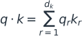
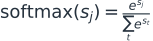
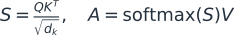
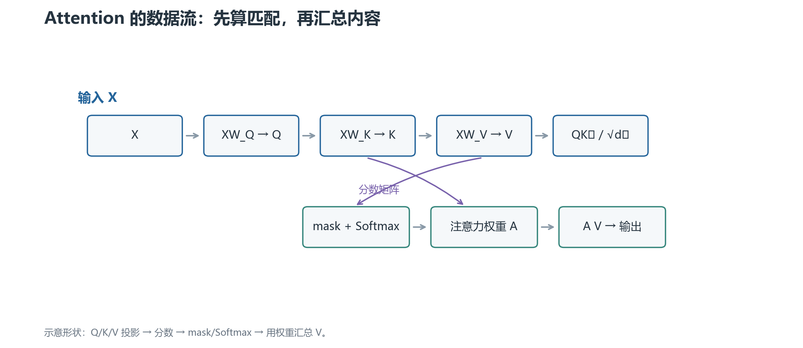
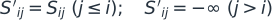
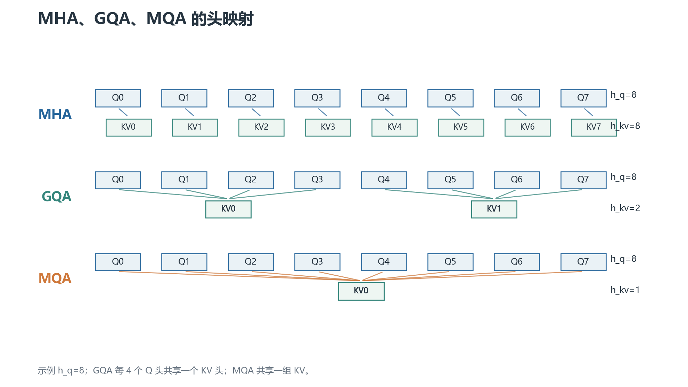
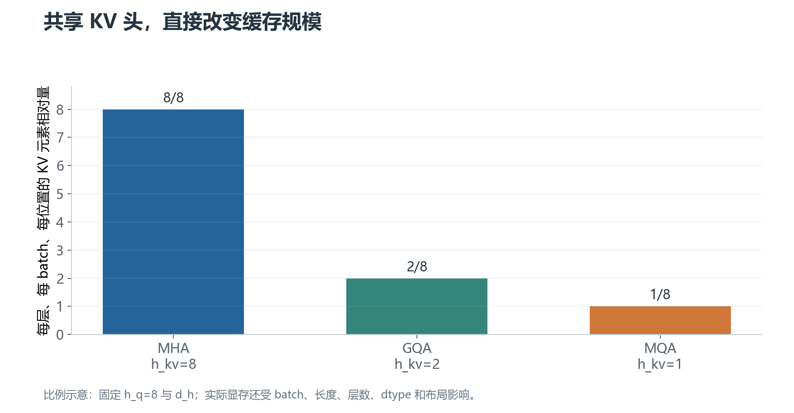

Attention 与
MHA / MQA / GQA
先把一次注意力计算算清楚，再理解多头和共享 KV 头为什么会改变推理成本。
默认讨论 decoder-only Transformer；不同模型的头数、布局和 kernel 仍需以配置为准。
01 · 缩放点积注意力：一次查询如何读取其他位置
Attention 的核心动作可以概括成：当前 token 拿着一个查询，去比较其他 token 的键，再按匹配程度汇总它们的值。
1. Q、K、V 从哪里来
输入隐藏状态记为 X ∈ R^{L×d_model}。L 是序列长度，d_model 是每个 token 的隐藏维度。
通过三组可学习矩阵得到：
Q（query）是“我想找什么”，K（key）是“我有什么特征可供匹配”，V（value）是“匹配后真正取走的内容”。这个比喻帮助记忆，但 Q/K/V 的每一维没有固定的人类语义。
2. 为什么是 QKᵀ：先算一个 query 对所有 key 的分数
先不要看矩阵。假设只有一个 query q_i 和三个 key：k_1、k_2、k_3。当前位置 i 需要回答一个问题：我应该从这三个位置分别取多少信息？
最直接的相似度是点积：
如果 Q/K 都写成行向量，qᵢ 的形状是 [1,d_k]，kⱼ 的形状也是 [1,d_k]。要让它们相乘并把对应维度相乘后求和，就要把第二个向量转成 [d_k,1]，也就是 kⱼ^T。
现在把所有 query 叠成矩阵 Q∈R^{L_q×d_k}，把所有 key 叠成矩阵 K∈R^{L_k×d_k}。矩阵乘法 QK^T 的形状是：
结果的第 i,j 个元素正好是 qᵢ·kⱼ。因此，转置不是为了“让公式看起来对称”，而是为了让每个 query 与所有 key 的内积一次性排列成分数矩阵。
如果写成 QK，内维度通常对不上；即使人为改了布局，也不会得到“query 位置 × key 位置”的矩阵。
3. 为什么除以 √d_k：控制点积分布的尺度
假设 Q 和 K 的每个分量都近似独立、均值为 0、方差为 1。一个点积是：

每个乘积的方差近似为 1，d_k 项相加后，点积方差约为 d_k，标准差约为 √d_k。head 维度越大，未缩放的分数就越容易出现很大的正负值。
Softmax 对一行分数做指数：

当分数差很大时，Softmax 会接近 [1,0,0,…]。这不只是“注意力更尖锐”，还会让大多数位置的梯度接近 0，训练早期更难调整。除以 √d_k 把点积的典型标准差拉回大约 1 的量级。
这是一种基于初始化统计的尺度控制，不是严格保证每个 batch 的方差都正好为 1。LayerNorm、参数初始化和训练状态都会改变真实分布，但这个缩放仍然是标准设计。
4. 为什么 Softmax 后再乘 V：把分数变成“取信息的比例”
点积只回答“匹配程度”，不能直接作为输出内容。假设一个 query 对三个位置的分数是 [2,1,0]，Softmax 后得到大约 [0.665,0.245,0.090]。这三个数有两个作用：非负，而且加起来为 1。
于是可以用它们对三个 value 做加权平均：
这一步把“去哪里取信息”转换成“具体取回什么内容”。如果直接用原始分数乘 V，分数可能为负、总和也不固定，输出尺度会随 key 数量和点积大小漂移；Softmax 提供了稳定的归一化权重。
把所有 query 的权重排成 A，所有 value 排成 V，批量计算就是 AV。矩阵乘法的第 i 行正好是第 i 个 query 对所有 value 的加权和。
这里的“概率”是注意力权重的数学形状，不表示模型真的在做一个经过校准的概率推断。Softmax 是可替换的设计部件，但标准 Transformer 使用它来获得可微、归一化的权重。
5. 把三步串起来
第 i 个位置与第 j 个位置的原始匹配分数是点积 qᵢ·kⱼ。除以 √d_k 后再做 Softmax：

完整顺序是：
QKᵀ：为每个 query 位置和每个 key 位置打一个匹配分数。/√dₖ：把分数的典型尺度控制住，避免 Softmax 过早饱和。- 加 mask：把不允许读取的位置从候选集合中排除。
Softmax：把一行分数变成归一化的取信息权重。AV：用这些权重对 V 做加权汇总，得到每个 query 位置的新表示。
因此，公式右侧的 A=softmax(S)V 中，A 容易造成歧义：严格说 softmax(S) 是注意力权重矩阵，乘 V 后才是输出。下面把权重记为 P，输出记为 O：
Softmax 在每一行上计算：
它产生非负、和为 1 的权重。输出位置 i 是所有 V 的加权平均，不是只复制一个位置。
6. 矩阵形状一定要能对上
若 X 是 [B,L,d_model]，单头投影后的 Q/K/V 是 [B,L,d_k]。于是：
QKᵀ是[B,L,L]：每个 query 位置对所有 key 位置的分数；Softmax后仍是[B,L,L]：每一行是一个 query 的注意力分布；AV是[B,L,d_v]：每个 query 位置得到一个汇总向量。

图中最容易混淆的是中间的 L×L：它不是 token embedding，也不是最终输出，而是“每个位置应该从哪些位置取多少信息”的权重矩阵。
7. mask 在 Softmax 前起作用
因果 mask
decoder-only 语言模型预测下一个 token 时，位置 i 不能读取未来的 j>i。实现上把这些分数改成负无穷附近的值：

Softmax 后，被遮住的位置权重近似为 0。
Padding mask
batch 内样本长度不同时，padding 只是对齐用的占位符。它们不应参与有效注意力。padding mask 与 causal mask 的职责不同，工程中常将二者合并。
不要把 mask 乘在最终输出上；那会让无效位置影响 Softmax 分母。正确位置通常是分数计算后、Softmax 之前。
8. Self-attention 与 cross-attention
Self-attention 的 Q、K、V 都来自同一序列，Q 和 K 的长度相同。
Cross-attention 的 Q 来自一个序列，K/V 来自另一个序列。例如 encoder-decoder 模型中，decoder 用自己的状态查询 encoder 输出。此时 query 长度与 key/value 长度可以不同。
MHA、MQA、GQA 主要讨论 self-attention 中 Q/K/V 的头如何组织；不要用 cross-attention 的来源差异替代这些概念。
9. 复杂度与瓶颈
对稠密全注意力，显式形成 L×L 分数矩阵时，时间和中间存储大致含有 O(L²d_h) 与 O(L²) 项。Q/K/V 投影和输出投影大致是 O(Ld_model²)，具体主导项取决于长度与模型宽度。
FlashAttention 可以分块计算，减少读写完整 L×L 矩阵的显存压力，但没有把稠密注意力的数学依赖变成线性。它是 IO-aware 的精确注意力内核，不等于稀疏注意力。
下一章：多头注意力。
02 · 多头注意力：为什么要把一个注意力拆成多个头
单头注意力只有一组 Q/K/V 投影。多头注意力（Multi-Head Attention，MHA）把隐藏维度拆成多个较小的子空间，让不同头学习不同的匹配模式。
1. 形状变化
设 query head 数为 h，每个 head 的维度为 d_h，满足：
投影后把 [B,L,d_model] reshape/transposed 成：
[B, L, d_model]
↓ 线性投影 + reshape + transpose
[B, h, L, d_h]
↓ 每个 head 独立算 attention
[B, h, L, d_h]
↓ transpose + concat
[B, L, d_model]
↓ W_O
[B, L, d_model]
每个头的 QKᵀ 是 [B,h,L,L]。头之间通常不共享投影参数，最后把它们拼回隐藏维度。
2. “不同头学不同关系”是目标，不是硬编码保证
有的头可能更关注局部相邻位置，有的头可能关注远距离结构或标点，但训练不会保证每个头都对应一种可读功能。
头的排列也没有固有意义。交换两个 head 及其对应输出投影的列/块，可以得到等价表示。因此不要根据 head 编号直接下结论。
3. 参数量怎么计算
标准 MHA 中，Q/K/V 三个投影和输出投影大致是：
忽略 bias 时，每个 W_Q、W_K、W_V、W_O 都约为 d_model×d_model。head 数改变的是内部组织；在总 d_model 固定时，不会自动减少这些投影参数。
如果 Q/K/V 使用不同的输入维度，或采用分组/低秩投影，参数量要按真实矩阵形状重算。
4. MHA 的推理问题不在 FLOPs，而在 KV cache
自回归生成时，历史 token 的 K/V 可以缓存，下一步只需为新 token 计算 query，并与缓存的 K 做匹配。
对于 batch B、已缓存长度 L、层数 N_layer，每层 KV cache 元素数大致为：
前面的 2 是 K 和 V 两份。若使用 BF16，每个元素约 2 字节。按字节估算时还要乘 batch、层数和数据类型字节数。
MHA 的问题是每个 query head 都有一份 K/V。MQA/GQA 正是从这里节省缓存。
下一章：MHA、MQA、GQA。
03 · MHA、MQA、GQA：Q 头和 KV 头怎样共享
这三个缩写的核心区别只有一个：query head 有多少个，key/value head 有多少个，以及它们如何对应。
设 query head 数为 h_q，KV head 数为 h_kv，每个 head 维度为 d_h。
1. MHA：每个 Q 都有自己的 K/V
Multi-Head Attention 取：
第 r 个 query head 使用第 r 个 key head 和第 r 个 value head。没有跨头共享。
KV cache 每层每个位置保存 2h d_h 个元素，因此容量最大，但表达自由度也最完整。
2. MQA：所有 Q 共享一组 K/V
Multi-Query Attention 取：
Q 仍然有多个头，K 和 V 各只有一个头。计算时把同一组 K/V 广播给所有 query head。
KV cache 从 2h d_h 降到 2d_h，理论上按 head 数缩小；但广播不等于复制物理缓存，具体内核可能采用共享视图、分块加载或临时展开。
MQA 降低了推理内存与带宽压力，代价是所有 query head 共享同一组 K/V 表示，可能损失部分质量。这个代价取决于模型和训练方式，不能写成固定百分点。
3. GQA：把 Q 头分成若干组共享 K/V
Grouped-Query Attention 介于二者之间：
每组有 r=h_q/h_kv 个 query head，共享一个 K head 和一个 V head。映射可以写成：
例如 h_q=8、h_kv=2，每组 4 个 Q 头：Q0–Q3 共享 KV0，Q4–Q7 共享 KV1。

GQA 把 KV cache 缩小到 MHA 的 h_kv/h_q，同时保留比 MQA 更多的 KV 子空间。许多现代 decoder-only 模型选择这种折中，但具体头数仍要查看模型配置。
4. KV cache 内存对比
每层、每个 batch、每个位置的 K/V 元素数量是：
因此相对于 MHA：
| 结构 | h_kv |
相对 KV cache |
|---|---|---|
| MHA | h_q |
1 |
| GQA | h_kv |
h_kv/h_q |
| MQA | 1 | 1/h_q |

图中只比较结构比例。真实显存还受 batch、序列长度、层数、数据类型、分页缓存和对齐开销影响。
5. 为什么 GQA 需要训练或转换
不能只在推理配置里把 h_kv 改小，就期待原 MHA 权重自动拥有 GQA 行为。K/V 投影的输出通道、权重排列、缓存布局和 attention kernel 都必须一致。
一种转换思路是把原 MHA 的多个 K/V head 分组平均或选择代表，再用继续训练恢复质量。平均不是唯一方法，也不保证无损。
从头训练时，直接让模型在目标 h_kv 下学习，通常更自然；已有模型则需要明确转换策略和校准数据。
6. 容易混淆的关系
- MHA/MQA/GQA 描述的是 K/V head 的共享结构，不是位置编码。
- RoPE 通常分别作用在每个 query head 与对应 KV head 的 Q/K 上；共享 K/V 不表示取消 RoPE。
- Multi-head 与 multi-layer 是不同维度：head 是同一层内的并行子空间，layer 是堆叠的 Transformer block。
- GQA 不等于稀疏注意力。每个 query 仍可以看完整的 key 序列，除非另外使用窗口或稀疏 mask。
下一章：训练与推理实现。
04 · 训练与推理：KV cache、FlashAttention 和常见 bug
同一个 attention 公式，在训练和自回归生成时的计算组织不同。面试和排错都要先区分这两个阶段。
1. 训练：一次处理整段序列
训练 decoder-only 模型时，通常把整段 token 一次送入。causal mask 保证位置 i 看不到未来位置，虽然矩阵里可能同时算出了很多位置的分数。
训练阶段一般不需要 KV cache，因为每个 batch 会反复读取整段序列的激活；缓存反而会增加管理复杂度。FlashAttention 等内核通过 tile 方式计算，减少显存读写和中间矩阵保存。
2. 推理：prefill 与 decode
Prefill 是把用户输入的整段 prompt 编码进模型，建立第一份 KV cache。它更像一次长序列 attention。
Decode 是之后逐 token 生成。每次只新增一个 query，把它与历史 K/V cache 匹配，再把新 token 的 K/V 追加进缓存。
这解释了为什么长 prompt 可能拖慢首 token，而生成阶段常受内存带宽和 KV cache 读取限制。不能只用一个“推理速度”数字概括两者。
3. KV cache 的形状与追加
常见布局可以是 [B, h_kv, L, d_h]，也可以为了 kernel 使用 [B, L, h_kv, d_h] 等布局。形状不同不代表算法不同，但 transpose/contiguous 处理必须匹配内核。
新 token 到来时，把形状 [B,h_kv,1,d_h] 的 K/V 沿序列维追加。若把 head 维和序列维写反，结果可能仍能运行，却会产生难以察觉的质量错误。
GQA/MQA 的 query-to-KV 映射要在计算时正确广播。不要把 repeat 后的临时张量误当成真实 cache；那会重新放大显存。
4. 训练和推理为什么不能随意复用 mask
训练时的 Q 长度可能等于 K 长度；decode 时 Q 长度通常是 1，而 K 长度是历史长度加 1。causal mask 的形状和偏移因此不同。
带 padding 的 batch 还要组合 padding mask。左 padding 时，位置编号、RoPE 偏移和 cache position 需要与实际 token 对齐；只把 attention mask 左移，不一定能修复位置编码。
5. 常见实现错误
错误一：缩放两次
有的代码在 Q/K 上提前除以 sqrt(d_h)，又在点积后除一次，Softmax 分数会被过度压小。要明确缩放发生在哪一处。
错误二：Softmax 维度错了
Softmax 应沿 key 序列维度计算，使每个 query 的权重和为 1。沿 head 维或 embedding 维做 Softmax，数学含义已经变了。
错误三：mask 的 dtype 或方向错
布尔 mask 的 True/False 语义在不同 API 里可能相反；加性 mask 应使用足够小的值。最好用一个 3-token 的手算例子验证未来位置权重确实为 0。
错误四：Q/K 头数与 KV 头数不能整除
标准 GQA 需要 h_q % h_kv == 0。不能整除时，简单整数分组映射没有定义；某些实现会拒绝配置，不能假设自动取近似。
错误五：cache position 与 RoPE position 不一致
即使 K/V 缓存内容正确，只要新 Q/K 旋转使用的位置编号错一位，生成质量也可能明显下降。扩展上下文、滑动窗口和左 padding 时尤其要检查。
6. FlashAttention 能做什么，不能做什么
FlashAttention 用分块和在线 Softmax 减少 HBM 读写，避免显式保存完整注意力矩阵。它仍然计算精确的稠密 attention（在数值误差范围内），不是通过近似低秩或稀疏模式改变公式。
它不能自动解决：KV cache 过大、query/KV 头映射错误、位置编码配置不一致、mask 逻辑错误，或者模型本身的长上下文泛化问题。
下一章：面试题与推导。
05 · Attention 面试题与推导
1. 为什么要除以 √d_k
若 Q/K 每个维度均值 0、方差约为 1，点积是 d_k 个乘积之和，方差随 d_k 增长。分数变大后，Softmax 更容易接近 one-hot，梯度变小。除以 √d_k 是稳定分数尺度的常见做法。
它不是为了让 attention 权重和为 1；Softmax 本身已经负责归一化。
2. MHA、MQA、GQA 的一句话回答
MHA：h_q=h_kv，每个 Q 头有独立 K/V。
MQA：h_kv=1，所有 Q 头共享一组 K/V，KV cache 最小。
GQA：1<h_kv<h_q，每组 Q 头共享一个 K/V 头，是质量和缓存之间的折中。
3. KV cache 为什么只缓存 K/V，不缓存 Q
下一步生成时，新 query 只来自新 token；历史 query 不会再次用于未来位置的打分。历史 K/V 会被每个新 query 读取，所以缓存它们能避免重复投影。
训练整段序列时，所有 Q/K/V 通常一次计算，不采用同样的自回归缓存逻辑。
4. MQA/GQA 节省的是哪一部分
主要节省推理阶段历史 K/V 的存储和读取带宽。Q 仍然有 h_q 个头，Q 投影和每步新 token 的计算并不会按同样比例消失。
因此不能说 MQA 让整个 Transformer 的参数量或所有 FLOPs 都缩小到 1/h_q。它主要改变 K/V 投影输出规模、KV cache 和相关 attention 访存。
5. 为什么 GQA 通常要求整除
如果每组有 r 个 Q 头，那么 r=h_q/h_kv 必须是整数，才能让每个 Q 头通过 floor(q_index/r) 映射到一个 KV 头。非整除需要另定义映射或采用不同结构，不是标准 GQA。
6. attention 的复杂度到底怎么写
单层稠密 self-attention 的分数矩阵包含 L×L 个位置对。若每个头维度为 d_h，QKᵀ 与 AV 的计算约为 O(hL²d_h)=O(L²d_model)；投影约为 O(Ld_model²)。
KV cache 的元素量约为 2BLh_kvd_hN_layer。GQA/MQA 直接减少 h_kv，所以对长序列生成的缓存占用和读取量更有影响。
7. RoPE 放在哪里，和 GQA 怎么接
通常先投影得到 Q/K/V，再按各自位置对 Q 和 K 应用 RoPE，然后计算 QKᵀ。GQA 中 Q 有更多头，K 有更少头；共享关系发生在 K/V 头组织上，RoPE 仍要按照对应的 Q/K 维度与位置应用。
具体实现可能采用 interleaved 或 split-half 的旋转布局，迁移模型时要遵循原配置，不能只看“用了 RoPE”四个字。
8. 面试排错顺序
先打印每个张量的 shape、dtype 和 device；再用极小矩阵手算 QKᵀ；检查缩放和 Softmax 维度；检查 causal/padding mask；最后检查 GQA 映射、RoPE position 和 cache append。
如果只看最终 loss，很难定位是数学公式、布局、mask 还是缓存偏移出了问题。